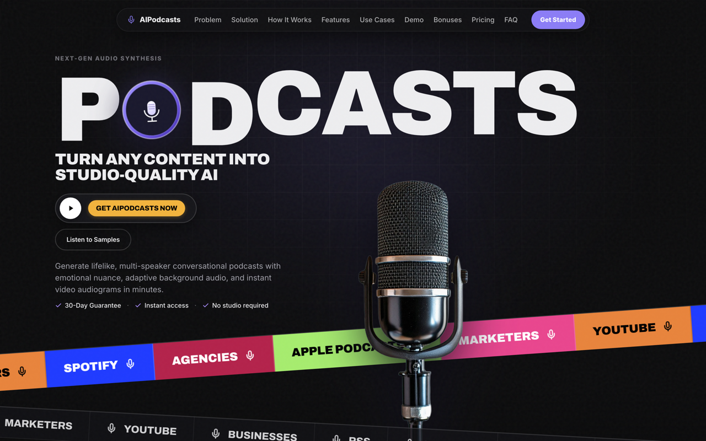

AIPodcasts: Studio-Quality AI Audio Platform
Designed an autonomous 3-step script-to-speech studio with multi-speaker timeline orchestration, dynamic waveform visualizer, and 1-click video audiogram syndication.
4x
Content Reach
< 2 min
Synthesis Speed
3-Step
Audio Pipeline
Explore live platform